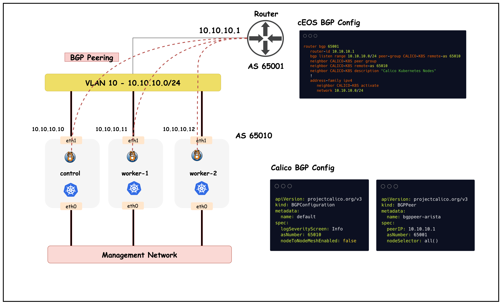
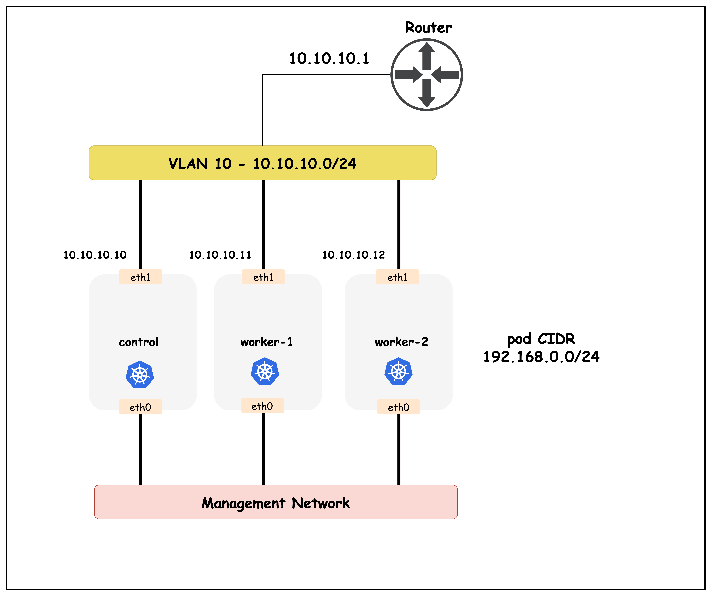
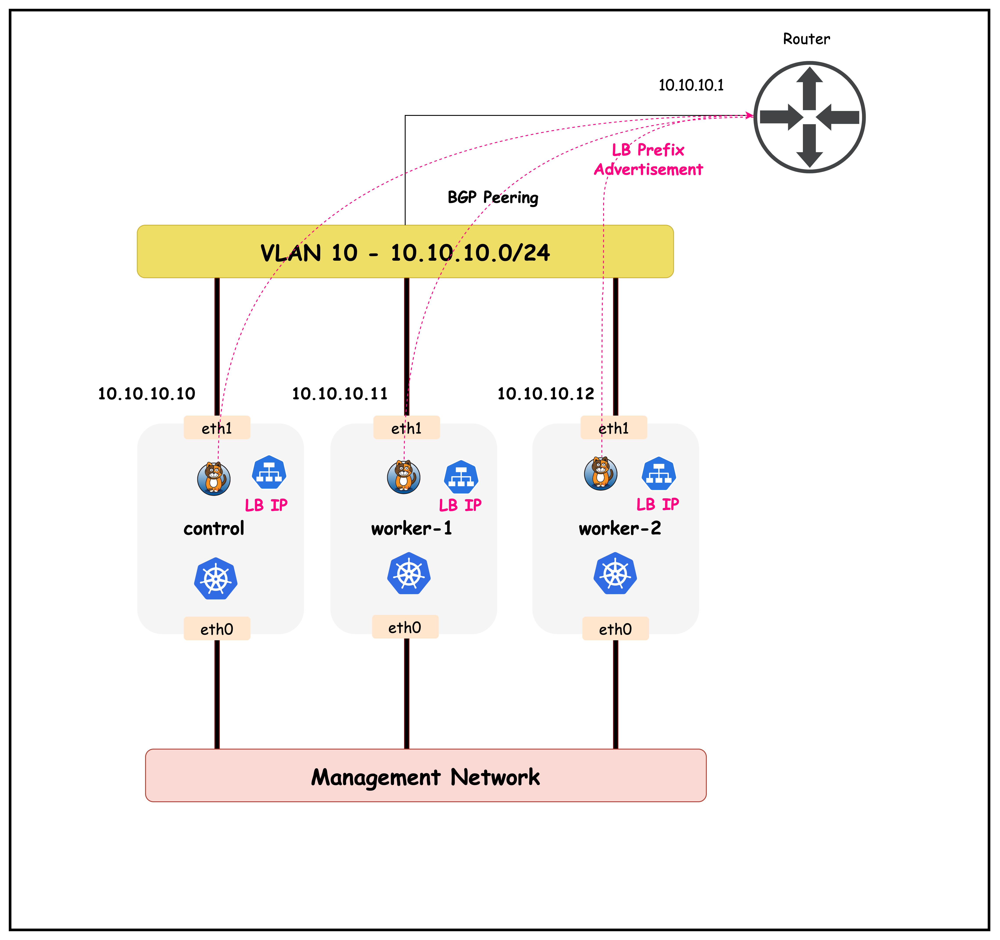
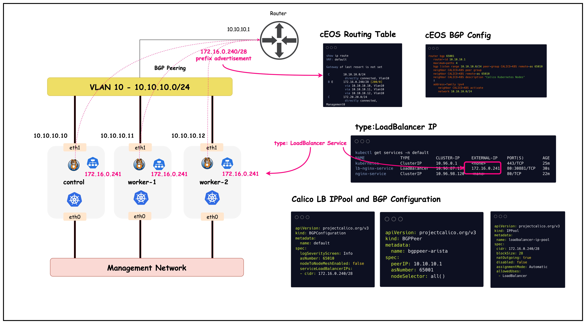

ContainerLab · Kind · Calico · cEOS
Calico BGP
从建邻到 VIP 广播
沿着本地 ContainerLab + Kind + cEOS 环境，把控制面路由与真实数据转发一步一步讲清楚。
10.10.10.10
10.10.10.11
10.10.10.12
控制面与数据面
控制面与数据面接力完成一次 VIP 访问
BIRD + confd
现场 calico-node v3.30.0 内的 BIRD v1.6.8 与 10.10.10.1 建立 TCP/179 会话。
cEOS BGP
接收 Service 前缀，选择最佳路径；启用 multipath 后可安装多个下一跳。
LoadBalancer Controller
从 allowedUses=LoadBalancer 的 IPPool 中给 Service 分配外部 IP。
Felix + Linux FIB
在节点上维护 workload 接口、策略与远端 Pod 网段路由。
kube-proxy iptables
把 Service VIP:Port 匹配到 KUBE-SVC 链，再 DNAT 到 Endpoint。
nginx Endpoint
当前两个后端分别位于 worker 与 worker2，返回 HTTP 响应。
2026-10-17 现场快照
四组地址各司其职
Kind 管理网
172.21.0.0/16
节点 eth0、容器管理与 API 通信
cEOS 管理网
172.20.20.0/24
Management0，不参与 BGP 建邻
BGP Underlay
10.10.10.0/24
节点 eth1、VLAN 10、TCP/179 与 Pod 跨节点转发
Pod 地址池
192.168.0.0/16
IPAM 按节点分配 /26 block
| control-plane | 10.10.10.10 | 192.168.23.64/26 |
| worker | 10.10.10.11 | 192.168.81.64/26 |
| worker2 | 10.10.10.12 | 192.168.164.128/26 |
本实验最关键的接口选择
nodeAddressAutodetectionV4.cidrs: 10.10.0.0/16
这会让 Calico 选择节点的 eth1 地址作为 Node IP 与 BGP 源地址，避免误选 Kind/Docker 管理网。
现场先检查
ip -br addr
kubectl get nodes -o wide
看见 10.10.10.10 / .11 / .12，后面的 BGP 才有正确起点。
工具版本提醒
现场 kubectl client v1.33.3、server v1.35.0，已出现超出 ±1 minor 的版本偏差警告。
ContainerLab 拓扑
三个节点直连同一个 VLAN 10
现场 topology.clab.yaml 与运行容器一致：ceos01:eth1/2/3 分别连接三个 Kind 节点的 eth1。
BGPConfiguration + BGPPeer
一个定义“我是谁”，一个定义“我要找谁”
BGPConfiguration · 集群级默认值
apiVersion: projectcalico.org/v3 kind: BGPConfiguration metadata: name: default spec: logSeverityScreen: Info asNumber: 65010 nodeToNodeMeshEnabled: false
关键解释：关闭默认 full mesh，节点之间不再自动互相建立 iBGP。
BGPPeer · 外部邻居定义
apiVersion: projectcalico.org/v3 kind: BGPPeer metadata: name: bgppeer-arista spec: peerIP: 10.10.10.1 asNumber: 65001 nodeSelector: all()
关键解释：all() 让三个节点分别与 cEOS 建一个 eBGP Session。
Peer Group + Listen Range
cEOS 用 listen range 接住三个邻居
router bgp 65001 router-id 10.10.10.1 bgp listen range 10.10.10.0/24 \ peer-group CALICO-K8S remote-as 65010 neighbor CALICO-K8S peer group neighbor CALICO-K8S remote-as 65010 address-family ipv4 neighbor CALICO-K8S activate network 10.10.10.0/24
为什么用 peer-group + listen range
不用逐个写三段 neighbor。只要来源属于 10.10.10.0/24，远端 AS 又是 65010，就套用 CALICO-K8S 模板。
容易讲错的一行
network 10.10.10.0/24 是 cEOS 对邻居发布本地 VLAN 前缀，不等于 Calico 已经发布 Pod 路由。
TCP/179 与 BGP 状态机
BGP 建邻：先 TCP，再交换 OPEN
原课程视觉资料
一张图对齐 Calico 与 cEOS 的配置边界

三条独立 eBGP 会话
三个节点都使用 AS 65010，分别连接 cEOS AS 65001。
动态邻居模板
cEOS 的 listen range 与 peer-group 避免逐个维护 neighbor。
节点 full mesh 已关闭
nodeToNodeMeshEnabled=false，外部 cEOS 邻居承担本课的 BGP 演示重点。
图片来源网络。
show ip bgp neighbors 10.10.10.10
Established 之外，还要读懂定时器与能力
BGP neighbor is 10.10.10.10 remote AS 65010, external link BGP state is Established Hold time 180 seconds Keepalive 60 seconds TTL 1 TCP state ESTABLISHED Retransmissions 0 RTT / variation 1.6 ms / 1.9 ms IPv4 Unicast negotiated Four Octet ASN negotiated Route Refresh negotiated Graceful Restart negotiated
消息持续增长
OPEN 各 1 次，KEEPALIVE 与 UPDATE 持续交换；队列 InQ/OutQ 均为 0。
TTL = 1
这是直连 eBGP 会话；如果中间隔三层设备，需要显式 multihop 设计。
Graceful Restart
双方协商重启能力，但现场收到的 Forwarding State 不保留，不能把它当作无损切换保证。
两条独立的控制开关
Pod 路由留在集群内，Service 路由单独发布
calicoNetwork: ipPools: - cidr: 192.168.0.0/16 blockSize: 26 encapsulation: VXLANCrossSubnet natOutgoing: Enabled disableBGPExport: true
含义：这个 IPPool 的路由不通过 BGP 导出给外部邻居。
disableBGPExport 只阻止 Pod 池向外发布，不会关闭节点上的 Pod 路由。
现场已验证
BIRD 与 cEOS 均为 Established；节点 FIB 已有远端 /26 路由。
上游只学习 Service
cEOS 的 PfxRcd=1，收到 Service /28；Pod CIDR 仍不向外发布。
VXLANCrossSubnet 只在节点跨子网时封装。现场三个 eth1 同属 10.10.10.0/24，因此远端 Pod block 直接指向目标节点 eth1。
原课程拓扑图
管理网、BGP underlay 与 Pod 地址空间

图中的核心思想
节点管理接口与 BGP 接口分离。cEOS 只和 eth1 所在 VLAN 10 建立三层关系。
现场数据的差异
原图标注的是 Pod CIDR 示例；现场实际由 Calico IPAM 分配三个 /26 block。
排错先分层
kubectl 不通看管理网；BGP 不通看 eth1/VLAN 10；Pod 不通看 block route、veth 与策略。
图片来源网络。
BlockAffinity + Linux FIB
每个节点拿一个 /26，跨节点只需三条聚合路由
| 节点 | IPAM Block | 示例 Pod / 工具 IP | 其他节点如何到达 |
|---|---|---|---|
| control-plane | 192.168.23.64/26 | multitool 192.168.23.66 | via 10.10.10.10 dev eth1 |
| worker | 192.168.81.64/26 | nginx .66 / multitool .67 | via 10.10.10.11 dev eth1 |
| worker2 | 192.168.164.128/26 | nginx .138 / multitool .139 | via 10.10.10.12 dev eth1 |
control-plane# ip route blackhole 192.168.23.64/26 proto 80 192.168.81.64/26 via 10.10.10.11 dev eth1 192.168.164.128/26 via 10.10.10.12 dev eth1
为什么同时有 blackhole
本地 block 的 blackhole 防止某个不存在的 Pod 地址被默认路由带出；已存在的 workload /32 路由优先级更高。
数据面 · Pod to Pod
同一二层底座上，Pod 包按主机路由转发
ICMP 实测
control-plane 到两个 nginx Pod 均 3/3 成功，平均 RTT 0.55 至 0.58 ms。
Traceroute + FIB
首跳 172.21.0.3 是节点 ICMP 源地址；转发路由明确走 eth1 到 .12。
HTTP 实测
Pod-to-Pod、ClusterIP 与 LB VIP 均返回 HTTP 200。
远端现场输出
Established 证明会话健康，PfxRcd 说明学到了什么
ceos# show ip bgp summary Neighbor AS State PfxRcd PfxAcc 10.10.10.10 65010 Estab 1 1 10.10.10.11 65010 Estab 1 1 10.10.10.12 65010 Estab 1 1
birdcl show route export Node_10_10_10_1 all
show ip bgp 172.16.0.240/28
State = Estab
TCP 179 与 BGP OPEN/KEEPALIVE 正常，邻居会话已经起来。
Keepalive 60s / Hold 180s
协商了 IPv4 Unicast、4-octet ASN、Route Refresh 与 Graceful Restart。
PfxRcd / PfxAcc = 1 / 1
每个节点发布的 Service /28 都被 cEOS 接收并通过策略检查。
演示口令：“三条电话都接通了，而且每个节点都告诉 cEOS：这个 VIP 网段从我这里能进。”
LoadBalancer 之前
先确认 ClusterIP 与 Endpoint 本身工作正常
$ kubectl get svc nginx-service TYPE ClusterIP CLUSTER-IP 10.96.115.40 PORT 80/TCP $ kubectl get endpointslice 192.168.81.66:80 192.168.164.138:80 $ curl http://10.96.115.40 HTTP 200
DNS 只返回 ClusterIP
nginx-service.default.svc.cluster.local → 10.96.115.40
kube-proxy 建立 KUBE-SVC 链
iptables 以 50% 概率选择 worker2 Endpoint，另一条规则落到 worker Endpoint。
外部网络仍缺路由
ClusterIP 是集群虚拟地址，cEOS 没有 10.96.0.0/16 的路由，也不应直接依赖它。
诊断价值：先证明应用、Endpoint 与 Service 代理都正常，后续 VIP 不通时才能把范围收窄到 LB IPAM、BGP 或入口路径。
原课程视觉资料
给 Service 一个外部网络能找到的地址

地址分配
Calico LB Controller 从 172.16.0.240/28 分配 EXTERNAL-IP。
路由发布
serviceLoadBalancerIPs 让每个 BIRD 向 cEOS 发布这个 /28。
Service 转发
上游把包送入任意入口节点，kube-proxy 再 DNAT 到后端 Pod。
图片来源网络。
远端只读核验
VIP 已分配、已发布、已完成端到端访问
LoadBalancer Service 实测
NAME lb-nginx-service TYPE LoadBalancer CLUSTER-IP 10.96.105.59 EXTERNAL-IP 172.16.0.240 NODEPORT 32764/TCP TRAFFIC Cluster cEOS → 172.16.0.240:80 HTTP 200
两个 Endpoint：192.168.81.66:80 与 192.168.164.138:80。
IPAM 分配完成
loadbalancer-ip-pool 为 172.16.0.240/28，首个 VIP 实际分到 .240。
BGP 广播完成
三个邻居各收到并接受 1 条前缀；BGP RIB 显示 3 paths available。
Service 转发完成
kube-proxy 为 VIP 建立 KUBE-EXT 链，并 DNAT 到两个 nginx Endpoint。
当前唯一未开启的优化：cEOS BGP RIB 有 3 条等价路径，但 FIB 仍只安装最佳路径 10.10.10.10；配置 maximum-paths 后才会形成 ECMP。
IPAM 控制面
先有地址池，再由 Service 领取 VIP
Calico IPPool
kind: IPPool metadata: name: loadbalancer-ip-pool spec: cidr: 172.16.0.240/28 blockSize: 28 natOutgoing: true assignmentMode: Automatic allowedUses: - LoadBalancer
Kubernetes Service
kind: Service metadata: name: lb-nginx-service spec: selector: app: nginx ports: - port: 80 targetPort: 80 type: LoadBalancer
IPPool
定义可分配范围，只允许 LoadBalancer 使用。
LB Controller
assignIPs=AllServices，从 /28 中为新 Service 分配地址。
Service status
status.loadBalancer.ingress.ipMode=VIP，实际地址为 172.16.0.240。
BIRD 实际导出
三个节点向 cEOS 发布同一个 /28
kind: BGPConfiguration metadata: name: default spec: asNumber: 65010 nodeToNodeMeshEnabled: false serviceLoadBalancerIPs: - cidr: 172.16.0.240/28
birdcl show route export 显示 /28 以 static blackhole 进入 BIRD，再通过 eBGP 导出。
三个节点输出对照
同一个 /28，三个不同 NEXT_HOP
control-plane
172.16.0.240/28
blackhole [static1]
AS_PATH 65010
NEXT_HOP 10.10.10.10worker
172.16.0.240/28
blackhole [static1]
AS_PATH 65010
NEXT_HOP 10.10.10.11worker2
172.16.0.240/28
blackhole [static1]
AS_PATH 65010
NEXT_HOP 10.10.10.12为什么是 blackhole
BIRD 用静态聚合前缀作为广告源，避免为地址池中的每个 VIP 创建一条 BGP NLRI。
为什么节点内核看不到 /28 路由
VIP 由 kube-proxy 的 iptables 规则截获；BIRD 的 static blackhole 用于路由发布，不等于 Linux FIB 必须安装相同 blackhole。
birdcl show route export Node_10_10_10_1 all
cEOS 现场 RIB 与 FIB
收到三条路径，不代表默认全部装进 FIB
B E 172.16.0.240/28 [200/0]
via 10.10.10.10, Vlan10
现场 BGP RIB 有 3 条 valid external 路径；当前 FIB 只安装 best path 10.10.10.10。
从 1 条 FIB 路径到 3 条 ECMP
maximum-paths 只改变安装策略，不改变邻居数量
配置
ceos# config t ceos(config)# router bgp 65001 ceos(config-router-bgp)# maximum-paths 4 ceos(config-router-bgp)# end
为什么写 4：表示最多安装 4 条满足等价条件的 eBGP 路径；本实验只有 3 个 Calico 下一跳，所以最终安装 3 条。
验证
ceos# show ip route 172.16.0.240/28
B E 172.16.0.240/28 [200/0]
via 10.10.10.10, Vlan10
via 10.10.10.11, Vlan10
via 10.10.10.12, Vlan10
ECMP 通常按五元组做流哈希。同一个 TCP 连接保持同一路径，不是每个包轮流换节点。
BGP 路由 + kube-proxy iptables
路由把包送进集群，Service 再把包送到 Pod
最长前缀匹配命中 172.16.0.240/28。
当前 best 是 .10；开启 ECMP 后按流哈希。
kube-proxy 将 VIP:80 DNAT 到 Endpoint。
cEOS 与 multitool 实测均为 HTTP 200。
目标地址逐步变化
172.16.0.240:80 最终 DNAT 到两个 Endpoint
192.168.164.138:80KUBE-SEP → DNAT192.168.81.66:80KUBE-SEP → DNAT-d 172.16.0.240/32 --dport 80 -j KUBE-EXT-7XCKQ6TNE3TNVSQP KUBE-SVC-7XCKQ6TNE3TNVSQP --probability 0.50000000000 -j KUBE-SEP-PRYZQCH2VY7EDR6D
为什么入口节点可以没有本地 Pod
externalTrafficPolicy=Cluster，KUBE-SVC 可以选择全局任意 Ready Endpoint；因此 control-plane 收到包后仍能转发到 worker 或 worker2。
原课程总结图
地址池、BGP 广播、路由表与 Service 汇总

图片来源：图片来源网络。图中 VIP 是参考值，现场实际 VIP 为 172.16.0.240。
补充知识 · 官方行为边界
externalTrafficPolicy 决定“哪些节点发布”和“进来后去哪”
| 维度 | Cluster（当前 manifest 默认） | Local |
|---|---|---|
| BGP 广播节点 | 所有未排除的节点广播 Service CIDR | 只有拥有本地 Endpoint 的节点广播 Service 的精确路由 |
| 上游负载分担 | ECMP 可打到任意节点 | ECMP 只打到真正托管后端的节点 |
| 二次跨节点 | 可能发生 | 对 LoadBalancer / NodePort 可避免 |
| 客户端源 IP | 通常被 SNAT 隐藏 | 保留原始源 IP |
| 代价 | 后端分配更均匀，路径可能更长 | 流量可能不均，但路径短，策略更直观 |
本实验结论：Service 未显式设置 externalTrafficPolicy，因此采用 Cluster。三个节点都会发布 /28，即使 control-plane 没有本地 nginx Endpoint。
BGP Withdraw + ECMP 收敛
一条路径撤销，剩余入口继续服务新连接
控制面
BGP 会话断开或路由撤销后，cEOS 从 RIB 删除 .11 路径。
转发表
ECMP group 缩减到 .10 与 .12；新流量重新按剩余成员哈希。
连接影响
经过故障节点的既有连接可能中断；其余路径不会自动迁移旧 TCP 状态。
Local 模式差异：只有承载本地 Endpoint 的节点发布精确路由，Pod 调度变化也可能触发前缀新增或撤销。
现场演示
按这个顺序跑，观众能看到状态逐步变化
确认拓扑与节点 IP
containerlab inspect topology.clab.yamlkubectl get nodes -o wide
确认 LB 与 Endpoint
kubectl get ippoolskubectl get svc,endpointslice
看 Calico 导出
birdcl show protocols all Node_10_10_10_1birdcl show route export Node_10_10_10_1 all
对照 cEOS RIB 与 FIB
show ip bgp 172.16.0.240/28show ip route 172.16.0.240/28
跑 Pod 网络测试
ping -c 3 <remote-pod-ip>traceroute -n -I <remote-pod-ip>
验证 VIP 与可选 ECMP
curl http://172.16.0.240maximum-paths 4
排错
从线缆到应用，逐层收窄
| 现象 | 先看哪里 | 高概率原因 | 命令 |
|---|---|---|---|
| BGP 一直 Idle / Active | L2/L3 与 TCP 179 | eth1 地址、VLAN、ACL、ASN 或 peerIP 错 | ping 10.10.10.1show ip bgp summary |
| Established 但 PfxRcd=0 | 广告策略 | 尚未配置 serviceLoadBalancerIPs；或前缀被过滤 | kubectl get bgpconfiguration -o yaml |
| Service 没有 EXTERNAL-IP | LB IPAM | IPPool 未创建、allowedUses 错、地址耗尽或 LB Controller 未启用 | kubectl get ippoolskubectl get kubecontrollersconfiguration |
| cEOS 有路由但访问超时 | 数据面与 Endpoint | kube-proxy、NetworkPolicy、Pod 未 Ready、回程异常 | kubectl get endpointslicestcpdump -ni eth1 |
| 只有一个下一跳 | cEOS multipath | 未配置 maximum-paths 或路径属性不等价 | show ip bgp 172.16.0.240/28 |
控制面抓什么
tcp port 179
VIP 数据抓什么
host 172.16.0.240
确认后端
kubectl get pods -o wide
总结
把整套实验压缩成一条因果链
Established 表示控制通道可用。
PfxRcd=1 表示 /28 已被收到。
RIB 有 3 条，当前 FIB 装 1 条；maximum-paths 可开启 ECMP。
HTTP 响应才是最终端到端证据。
最后一句：BGP 负责把“VIP 在哪里”告诉网络，Kubernetes Service 负责把“VIP 后面是谁”落实到 Pod。
附录
资料来源与演示操作
官方校准
Calico · Configure BGP peering
Calico · Advertise Kubernetes service IP addresses
键盘
← / → 翻页 N 讲稿 O 总览 F 全屏
触控
左右滑动翻页。右下角也保留上一页、下一页、讲稿和全屏按钮。
打印或导出 PDF
浏览器打印时选择横向，边距设为无，启用背景图形。